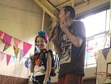

有鹿幼稚園にてキャラ丸君と無料上映会を行ってきました！みんな元気いっぱいでダンスも一緒に踊ってきたよ。たくさんの友達ができて嬉しかったな…！

|
田無高校の文化祭にお呼ばれしたので遊びに行きました！ その際にエコキャップの宣伝もさせていただきありがとうございます。一緒に呼び込みして下さった生徒の方々、そしてキャラ丸ドク丸を可愛がってくれた皆様ありがとうございます！ |
|
有鹿幼稚園にてキャラ丸君と無料上映会を行ってきました！みんな元気いっぱいでダンスも一緒に踊ってきたよ。たくさんの友達ができて嬉しかったな…！ |
|
松本佳奈さん主催のキャンドルナイト！特注のキャンドルに囲まれて始まったステージはとっても幻想的でした。キャラ丸君も遊びに行きましたよ！ |
| 
カンボジアの子供達が集まったビッグイベント、『カンボジアの天使が舞い降りるJAPAN TOUR』に遊びに行ってきました。カンボジアの子供達には私達もたくさんの元気をいただきました。またいつか会えるといいなぁ…！ |
|
今回はなんと…西東京から離れて長崎の五島列島に御呼ばれしてキャラ丸君と一緒に行ってきました！五島列島の子供達はみんな元気いっぱい！島の人たちみんなでわいわいがやがや。みんなで落描きもしたんだよ！ |
|
キャラ丸くんとドク丸くん、そして今回は中学生のお友達も含めて谷戸第ニ小学校へエコキャップを集めにいったよ！とっても暑い１日だったのに小学生の子たちはみんな元気いっぱい、エコキャップありがとう！ |
|
きらっとで消防署の方々が主催した『西東京セーフキッズセミナー』にキャラ丸君とドク丸君とで行ってきたよ！救急方法を学んだり、エクラアニマルは水鉄砲で風船を落とすゲームを開催したり、会場は大盛り上がり！最後はみんなで記念撮影をして、とっても楽しかったです。 |
|
エクラアニマルスタッフ一同、総動員で作り上げた『ウニのお母さんとホタテのお母さん』の人形劇を、人形劇フェスタにて発表して来ました！アドリブだらけの人形劇で、とっても楽しかったです。もちろん参加した他の方達の人形劇も面白かったよ！ |
7月7日 八幡保育園上映会七夕の日に八幡保育園へキャラ丸くんと一緒に無料上映会へ行ってきました！子供たちと一緒に踊ったり遊んだり、お昼はみんなと一緒に給食を食べたりしてとっても楽しかったよ！ |